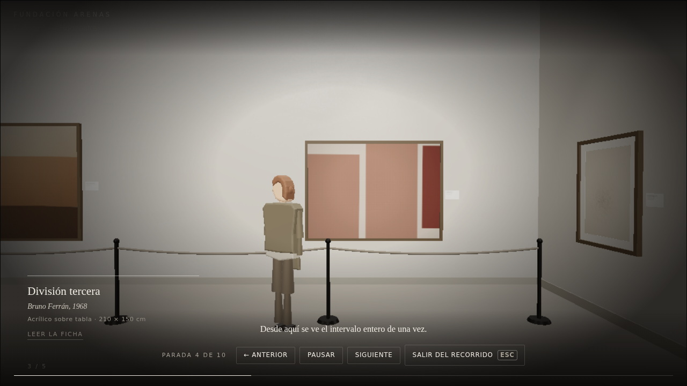
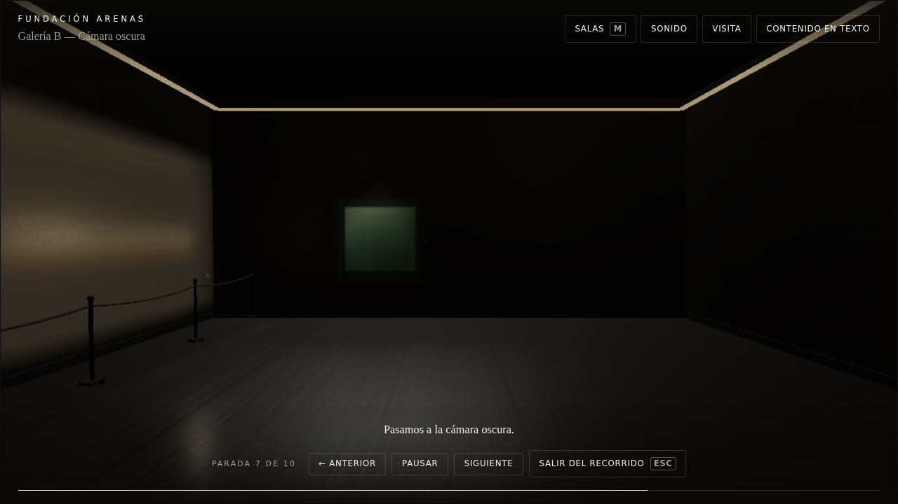
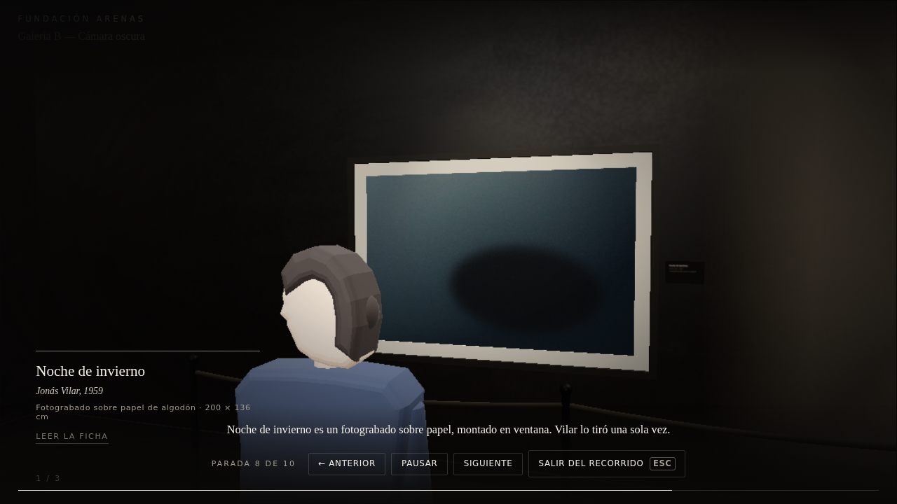
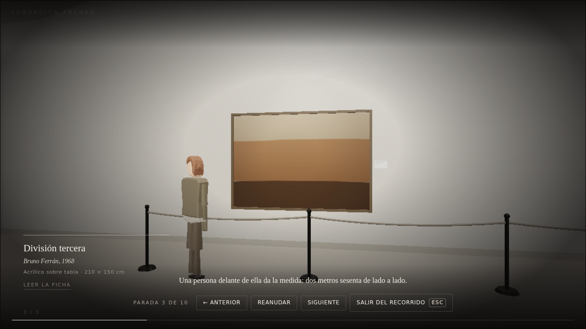
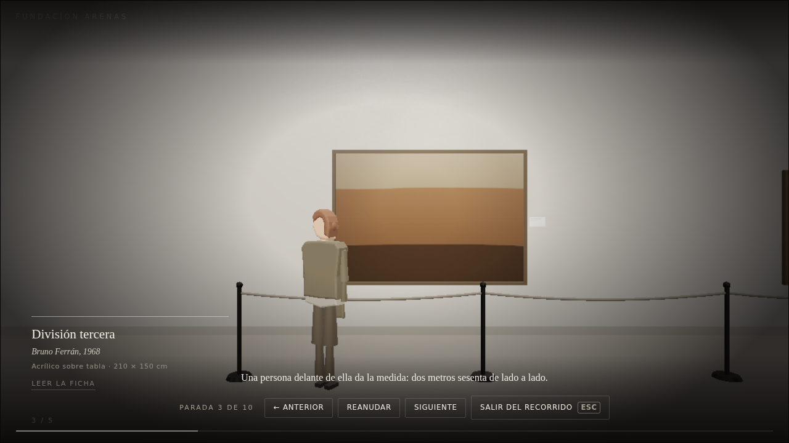
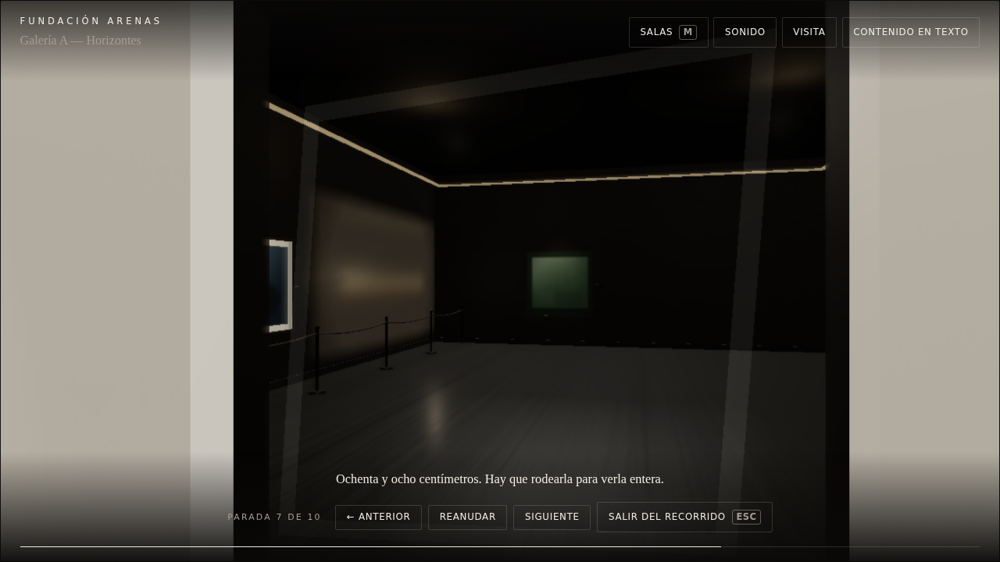
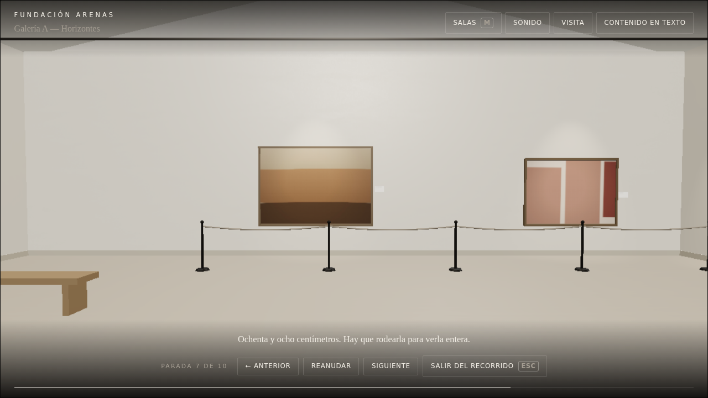
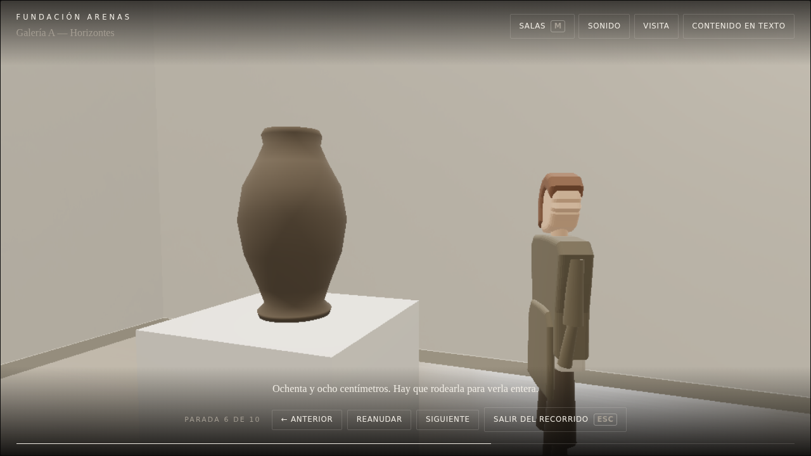
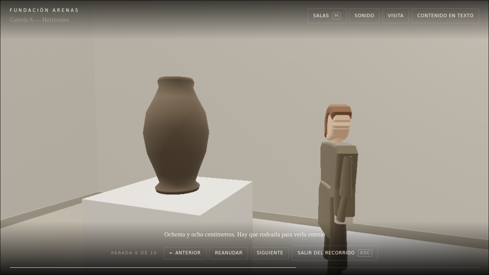

Ruta real del producto. Toda navegación es un clic en ← ANTERIOR o Siguiente; no se llama a la API del motor para moverse. Contador y guía se leen del DOM en el mismo instante que la captura.



9 posiciones de cámara distintas a lo largo de 3484 ms · recorrido 6 m frente a 6 m en línea recta.




18 posiciones de cámara distintas a lo largo de 78991 ms · recorrido 15.035 m frente a 6.766 m en línea recta · salas space.gallery-b → space.gallery-a.







Las tiras son para mirar, no para medir: cada captura cuesta segundos en este entorno. El movimiento se mide con una traza de cámara en rAF dentro de la página.